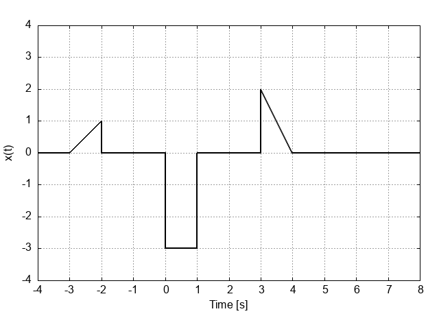

ID Number: 23100968
Group No.: 2
QUESTION 1:
Given the signal x(t)

double x(double t).
QUESTION 2:
Using the signal x(t) from QUESTION 1, find its Fourier Transform
_
/ + oo - jwt
X(jw) = | x(t) e dt
_/ - oo
Edit the C-function with the prototype
double complex Xjw(double w)
found in Xjw.c so that it defines the X(jw) as a mathematical operation in C-language.
For example, the mathematical expression
- (1 + jw)t
sin(2t) e
would be written as
sin(2*t)*exp(-(1 + I*w)*t);
where I is the imaginary number i or j. Complex numbers can be defined as real + I*imaginary so that -2+j3 can be assigned to a
complex variable as
double complex imaginaryNumber = -2 + I*3;
QUESTION 3:
Given the discrete time signal
n
x[n] = C α
where C = 3.00 and α = 2.00, find the Discrete Fourier Transform
2πk
---n
__ N - 1 N
X[k] = \ x[n]e
/__ n = 0
double complex X[] = { 1+I*1, 2+I*2, 3-I*4, 0, 0};